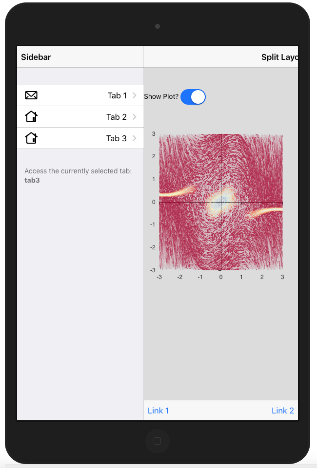
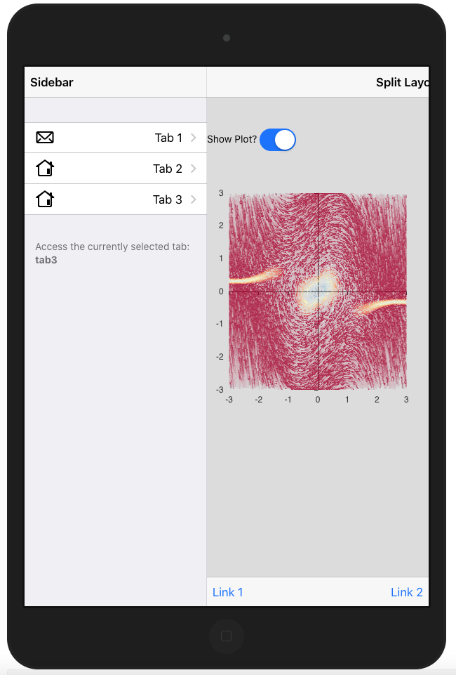

23 Reconstruct {shinyMobile}
Disclaimer: This section has been written and tested with Framework7 5.7.14.
Some feature may change in future releases.
23.1 Introduction to Framework7
Framework7 is the HTML/CSS/JavaScript engine that fuels shinyMobile. It is a flexible toolkit to build native looking web apps or progressive web apps (PWA). It has an incredibly rich ecosystem:
- Provides a core JavaScript API, React API, Vue API, Svelte API.
- A CLI to ease the creation of PWA, provide boilerplate and started templates.
- A full set of native icons.
- Hundreds of components with different look for iOS and material design, even desktop.
- A comprehensive set of documentation.
- A supportive community.
23.2 Initiate the package
This is time to initialize the package structure and extract the Framework7 dependencies. To get an idea of the package file structure, we run:
library(charpente)
get_dependency_assets("framework7")## ℹ Trying with https://data.jsdelivr.com/v1/package/npm/framework7## ✓ Success!## ────────────────────────────────────────────────────────────────────────────────## $url
## [1] "https://cdn.jsdelivr.net/npm/framework7@6.0.7/"
##
## $files
## [1] "esm" "core"
## [3] "components" "cjs"
## [5] "bundle" "less"
## [7] "lite" "lite-bundle"
## [9] "modules" "types"
## [11] "framework7.css" "framework7.d.ts"
## [13] "framework7.js" "framework7.js.map"
## [15] "framework7.less" "framework7.min.css"
## [17] "framework7.min.js" "framework7.min.js.map"
## [19] "framework7-bundle.css" "framework7-bundle.js"
## [21] "framework7-bundle.js.map" "framework7-bundle.less"
## [23] "framework7-bundle.min.css" "framework7-bundle.min.js"
## [25] "framework7-bundle.min.js.map" "framework7-bundle-rtl.css"
## [27] "framework7-bundle-rtl.min.css" "framework7-rtl.css"
## [29] "framework7-rtl.min.css" "LICENSE"
## [31] "package.json" "postinstall.js"
## [33] "README.md"
##
## $hasSubfolders
## [1] FALSEWe browse to the package structure page,
which provides details about necessary components. We are going to use the bundle version since
the lite approach is missing several components. We therefore only need framework7.bundle.min.js and
framework7.bundle.min.css, which is the default options of create_dependency:
path <- file.path(tempdir(), "shinyMobile")
create_charpente(path, license = "mit")Once the package created and opened, we download Framework7 dependencies. We specify
the latest stable version that is 5.7.14 and we target bundle.min files since minified
files do not contain the code to make all components working:
create_dependency("framework7", tag = "5.7.14", options = charpente_options(bundle = TRUE))which generates the framework7-dependencies.R script:
add_framework7_deps <- function(tag) {
framework7_deps <- htmltools::htmlDependency(
name = "framework7",
version = "5.7.14",
src = c(file = "framework7-5.7.14"),
script = "js/framework7.bundle.min.js",
stylesheet = "css/framework7.bundle.min.css",
package = "shinyMobile",
)
htmltools::tagList(tag, framework7_deps)
}23.3 Framework7 Layouts
Framework7 has 3 predefined layouts (Figure 23.1):
- Single page layout.
- Multi tabs layout.
- Split layout: this template is focused for tablet/desktop use. It is composed of a sidebar and a main panel.
 
FIGURE 23.1: Framework7 layouts
Let’s start simple and select the single page layout, whose corresponding HTML is given by:
<!DOCTYPE html>
<html>
<head>
<!-- Required meta tags-->
<meta charset="utf-8">
<meta name="viewport" content="width=device-width, initial-scale=1, maximum-scale=1, minimum-scale=1, user-scalable=no, viewport-fit=cover">
<meta name="apple-mobile-web-app-capable" content="yes">
<!-- Color theme for statusbar (Android only) -->
<meta name="theme-color" content="#2196f3">
<!-- Your app title -->
<title>My App</title>
<!-- Path to Framework7 Library Bundle CSS -->
<link rel="stylesheet" href="path/to/framework7.bundle.min.css">
<!-- Path to your custom app styles-->
<link rel="stylesheet" href="path/to/my-app.css">
</head>
<body>
<!-- App root element -->
<div id="app">
<!-- Your main view, should have "view-main" class -->
<div class="view view-main">
<!-- Initial Page, "data-name" contains page name -->
<div data-name="home" class="page">
<!-- Top Navbar -->
<div class="navbar">
<div class="navbar-bg"></div>
<div class="navbar-inner">
<div class="title">Awesome App</div>
</div>
</div>
<!-- Bottom Toolbar -->
<div class="toolbar toolbar-bottom">
<div class="toolbar-inner">
<!-- Toolbar links -->
<a href="#" class="link">Link 1</a>
<a href="#" class="link">Link 2</a>
</div>
</div>
<!-- Scrollable page content -->
<div class="page-content">
<p>Page content goes here</p>
<!-- Link to another page -->
<a href="/about/">About app</a>
</div>
</div>
</div>
</div>
<!-- Path to Framework7 Library Bundle JS-->
<script type="text/javascript" src="path/to/framework7.bundle.min.js"></script>
<!-- Path to your app js-->
<script type="text/javascript" src="path/to/my-app.js"></script>
</body>
</html>The head tag contains meta tags, some of them required for the PWA features.
The most important part is the dependencies that will be included there. Note that
the order matters: Framework7 dependencies go first, other dependencies follow.
The body tag is composed of several layers. The first one is the app root element, which
is crucial to the template initialization. We’ll come back on that point in the next section.
Then we find the view view-main component, inside which we find the page. The page contains
the navbar, toolbar (bottom bar) and the page content. Framework7 inserts JavaScript code
at the end of the body. Don’t worry, we can include them in the head as well.
Using html_2_R we convert the above code to R and extract the f7_page function. We replace
the title content by a title parameter, we remove all CSS and JS links since we add
them with the add_dependencies function applied to body. The page content is contained in a ... parameter.
We also move the navbar and toolbar content to create 2 other layout functions:
f7_page <- function(..., navbar, toolbar, title = NULL) {
tagList(
tags$head(
tags$meta(charset = "utf-8"),
tags$meta(
name = "viewport",
content = "width=device-width, initial-scale=1, maximum-scale=1, minimum-scale=1, user-scalable=no, viewport-fit=cover"
),
tags$meta(
name = "apple-mobile-web-app-capable",
content = "yes"
),
tags$meta(
name = "theme-color",
content = "#2196f3"
),
tags$title(title)
),
add_dependencies(
tags$body(
tags$div(
id = "app",
tags$div(
class = "view view-main",
tags$div(
class = "page",
navbar,
toolbar,
tags$div(
class = "page-content",
...
)
)
)
)
),
deps = "framework7",
)
)
}Below are the navbar and toolbar components. The navbar has only a title parameter and
the toolbar may contain items in a ... parameter. In practice they may contain more element
but this is enough for now:
f7_navbar <- function(title) {
tags$div(
class = "navbar",
tags$div(class = "navbar-bg"),
tags$div(
class = "navbar-inner",
tags$div(
class = "title",
title
)
)
)
}
f7_toolbar <- function(...) {
tags$div(
class = "toolbar toolbar-bottom",
tags$div(
class = "toolbar-inner",
...
)
)
}Don’t forget to regularly insert roxygen documentation with the insert roxygen skeleton RStudio feature.
At that point, we can try to run a simple shiny app. Best practice is to save the app.R file in
the inst/examples folder:
devtools::load_all()
library(shiny)
ui <- f7_page(
"Test",
navbar = f7_navbar("Title"),
toolbar = f7_toolbar(),
title = "shinyMobile"
)
server <- function(input, output, session) {}
shinyApp(ui, server)which displays nothing, but returns no error. We are actually missing the app initialization step.
23.4 App initialization
This step is mandatory to activate all template components (router, panels, …).
We create a custom script with create_js:
create_js("init")and add the following piece of JS inside:
$( document ).ready(function() {
app = new Framework7({
// App root element
root: '#app',
// App Name
name: 'My App',
// other options
});
});Note: we don’t assign app to a variable to make it globally accessible by any script!
It is relevant since app may be needed almost everywhere.
This script creates the app instance so as to be able to use methods,
get other information, interact with layout elements and listen to app events (offline, online, …).
Since the root element is a direct child of the body, the root property is not
mandatory. The full configuration list may be found here.
The next step is to initialize the main view, we add this line right after the app creation:
Once done, we compress the corresponding JS file to create the shinyMobile.min.js code
and update the f7_page to include the new dependency, after the Framework7 one:
build_js()
# updated f7_page
f7_page <- function(..., navbar, toolbar, title = NULL) {
tagList(
tags$head(
tags$meta(charset = "utf-8"),
tags$meta(
name = "viewport",
content = "width=device-width, initial-scale=1, maximum-scale=1, minimum-scale=1, user-scalable=no, viewport-fit=cover"
),
tags$meta(
name = "apple-mobile-web-app-capable",
content = "yes"
),
tags$meta(
name = "theme-color",
content = "#2196f3"
),
tags$title(title)
),
add_dependencies(
tags$body(
tags$div(
id = "app",
tags$div(
class = "view view-main",
tags$div(
class = "page",
navbar,
toolbar,
tags$div(
class = "page-content",
...
)
)
)
)
),
deps = c("framework7", "shinyMobile"),
)
)
}
devtools::load_all()If you run the previous app again, it should work as shown on Figure 23.2. The right panel displays the developer tools inside which we can seamlessly debug the JS code, by leveraging source maps.

FIGURE 23.2: First working {shinyMobile} app
From now, we can add a welcome notification message leveraging the notification API. There are 2 steps:
- Create the notification instance with
app.notification.create(parameters). - Tell the app to open the notification at start with
app.notification.open().
We add the following code to init.js and call build_js():
var notification = app.notification.create({
text: 'Welcome to shinyMobile!',
on: {
opened: function () {
console.log('Notification opened')
}
}
}).open();It will open at start up and close on swipe gesture. The Framework7 API is quite easy to understand and extremely powerful.
23.5 App configuration
The app object has a tremendous amount of methods and parameters.
In this section, we briefly describe the most significant and how to set it up.
Among all parameters, there are metadata parameters like name and version. Once the app initialized, all
app parameters are accessible with the . notation. For instance, if you setup a version number it is accessible
with app.version.
23.5.1 Global theme
One of the most important parameter is the theme that controls the overall app design (Figure 23.3):
-
ioscorresponds the iOS design. -
mdto material design. -
aurorato a desktop optimized design.
The good new is that if this parameter is set to auto, Framework7 will detect the
current device and accordingly adapt the design. Nothing prevents you from forcing the
iOS layout on android devices, even though being irrelevant. Interestingly, one may recover the
current device with app.device. There are many properties to review.


FIGURE 23.3: Framework7 skins: iOS (left), md (right).
23.5.2 Events
The app is able to emit events whenever relevant like init, resize, online, offline, which
allows to add interactivity:
23.5.3 Components configuration
All Framework7 components are highly customizable. Yet, if you know that some
parameters are not going to change, it is a good idea to make them global and share
across all instances. For instance, notifications have global options. Let’s add this code
to the init.js script inside the var app = new Framework7({ ... }):
This means all notifications will close after 3 seconds and have the My App title.
We add another notification to the init.js script with a delay of 1 second so as to
test this global feature. Note the use of internal Framework7 utils
app.utils.nextTick,
which is nothing more
than a setTimeout. At this point it should look like this:
$( document ).ready(function() {
// create app instance
app = new Framework7({
// App root element
root: '#app',
// App Name
name: 'My App',
// other options
notification: {
title: 'My App',
closeTimeout: 3000,
}
});
// init main view
mainView = app.views.create('.view-main');
var notification = app.notification.create({
text: 'Hello, how are you?',
on: {
opened: function () {
console.log('Notification opened');
}
}
}).open();
var otherMessage = app.notification.create({
text: 'You look great!'
});
// equivalent to setTimeout ...
app.utils.nextTick(function() {
otherMessage.open();
}, 1000);
});23.5.4 Other elements
Framework7 provides mobile specific modules like touch, which is a long press event (here 750 ms).
This is something you can usually do on many apps. To activate that feature, we pass
the following configuration to the app parameters list, that is inside app = new Framework7({...});:
To test that component, we create a button element and add it the taphold event in init.js:
The app.R script should look like:
ui <- f7_page(
"Test",
tags$div(
class = "list inset",
tags$ul(
tags$li(
tags$a(
href = "#",
id = "mybutton",
class = "list-button color-red",
"Large Red Button"
)
)
)
),
navbar = f7_navbar("Title"),
toolbar = f7_toolbar(),
title = "shinyMobile"
)
server <- function(input, output, session) {}
shinyApp(ui, server)Once the app is running don’t forget to open the developer tools and
set the device on mobile mode (iPhone or android) since taphold does not fire
on desktop (Figure 23.4).
taphold also triggers events related to the click like text selection, which
one may want to disable. If so, we have to add the following code to init.js, making sure
to check that touch exists:
// tapHold custom css
if (config.hasOwnProperty("touch")) {
if (app.params.tapHold) {
$("<style>")
.prop("type", "text/css")
.html(
`-moz-user-select: none;
-webkit-user-select: none;
user-select: none;`
)
.appendTo("head");
}
}which disables classic text selection after a long press in the window.
FIGURE 23.4: Long press or taphold event
An important remark is the click handling in Framework7. Framework7 has its own internal router that allows to pass data between pages and perform quite
advanced actions. While extremely convenient for classic web apps,
this feature is not completely suited for Shiny that does not natively support multi pages apps.
The recent work in the field is promising and plays well
with shinyMobile (see here) but this is out of the scope of this chapter. The internal router has strong implications, for instance clicking on
<a href="https://www.google.com/">Click me</a> will fail (while it works like
a charm for a classic shiny app), as shown below:
mylink <- a(href = "https://www.google.com/", "Click me")
# shinyMobile
ui <- f7_page(
mylink,
navbar = f7_navbar("Title"),
toolbar = f7_toolbar(),
title = "shinyMobile"
)
server <- function(input, output, session) {}
shinyApp(ui, server)
# classic shiny
ui <- fluidPage(mylink)
shinyApp(ui, server)To fix this issue, Framerwork7 has a clicks module options, that we may pass any valid CSS selector to the externalLinks property. Below is the default configuration:
Note: one might be tempted to target all a elements: this is a bad idea,
as it also target tabs navigation, which eventually fails! Therefore, it is best
practice to add the external class to all the necessary links like a(href = "https://www.google.com/", "Click me", class = "external")
23.5.5 Allow end-user configuration
In the above sections, we described some parameters to configure the app. Yet, we did setup all values directly in JavaScript. How do we allow the end user to provide external values?
The idea is the following:
- We create an options parameter in the
f7_pagefunction which accepts a list of parameters. - We convert it to the JSON format and store it in a tag. Ideally next to the
bodyelement. - We recover those data on the JS side and update the app initialization method.
The f7_page may be adapted:
f7_page <- function(..., navbar, toolbar, title = NULL, options = NULL) {
config_tag <- tags$script(
type = "application/json",
`data-for` = "app",
jsonlite::toJSON(
x = options,
auto_unbox = TRUE,
json_verbatim = TRUE
)
)
# create body_tag
body_tag <- tags$body(
tags$div(
id = "app",
tags$div(
class = "view view-main",
tags$div(
class = "page",
navbar,
toolbar,
tags$div(
class = "page-content",
...
)
)
)
),
config_tag
)
tagList(
tags$head(
tags$meta(charset = "utf-8"),
tags$meta(
name = "viewport",
content = "width=device-width, initial-scale=1, maximum-scale=1, minimum-scale=1, user-scalable=no, viewport-fit=cover"
),
tags$meta(
name = "apple-mobile-web-app-capable",
content = "yes"
),
tags$meta(
name = "theme-color",
content = "#2196f3"
),
tags$title(title)
),
add_dependencies(
body_tag,
deps = c("framework7", "shinyMobile")
)
)
}The above code deserves some explanations. We exploit a method already defined in section 11.2.
We convert the options list to a JSON with jsonlite::toJSON and embed it in a script tag.
The data-for attribute with the unique id guarantees the uniqueness of our configuration script.
config_tag <- shiny::tags$script(
type = "application/json",
`data-for` = "app",
jsonlite::toJSON(
x = options,
auto_unbox = TRUE,
json_verbatim = TRUE
)
)We then create an intermediate body_tag component where we insert the configuration tag.
On the JS side, the data collection must occur before the app initialization and is quite easy
with the jQuery find method:
We can accordingly update the app initialization:
app = new Framework7({
// App root element
root: '#app',
// App Name
name: 'My App',
version: config.version,
// other options
theme: config.theme,
notification: {
title: 'My App',
closeTimeout: 3000,
},
touch: {
tapHold: config.taphold,
},
});What happens if the user forgets to supply the version number? data.version is undefined
and the app still works! The biggest advantage of this approach is the fact that all TRUE
and FALSE (R) are converted to true and false (JS), which avoids unnecessary conversion steps.
However, we are still missing many potential configuration options. For instance, with the above code,
only root, name, version, theme, notifications, touch are considered. If the user
provides any other option, it is ignored.
In theory, we could do to make sure all elements are considered:
It assumes that the user exactly knows what to provide in the list, especially mandatory elements.
Knowing the crazy number of options, it might be slightly too complex for a new user.
What we suggest is to extract the most important components as direct f7_page parameters and
keep less important parameters in the options list. For example,
if you think that theme is super important (and it truly is), you could do:
f7_page <- function(..., navbar, toolbar, theme = c("ios", "md", "aurora"),
title = NULL, options = NULL) {
theme <- match.arg(theme)
options$theme <- theme
config_tag <- shiny::tags$script(
type = "application/json",
`data-for` = "app",
jsonlite::toJSON(
x = options,
auto_unbox = TRUE,
json_verbatim = TRUE
)
)
# ...
}which makes the API a bit more accessible (event though more complex to maintain) and you only need to add one line of documentation in the roxygen part. It would be disheartening to redirect them to the Framework7 API documentation and have to look for the relevant option!
Alternatively, you could also put all parameters in options
but provide a default value for f7Page like:
\itemize{
#' \item \code{theme}: App skin: "ios", "md", "auto" or "aurora".
#' \item \code{dark}: Dark layout. TRUE or FALSE.
#' \item \code{filled}: Whether to fill the \link{f7Navbar} and \link{f7Toolbar} with
#' the current selected color. FALSE by default.
#' \item \code{color}: Color theme: See \url{http://framework7.io/docs/color-themes.html}.
#' Expect a name like blue or red. If NULL, use the default color.
#' \item \code{pullToRefresh}: Whether to active the pull to refresh feature. Default to FALSE.
#' See \url{https://v5.framework7.io/docs/pull-to-refresh.html#examples}.
#' \item \code{iosTranslucentBars}: Enable translucent effect (blur background) on navigation bars for iOS theme (on iOS devices).
#' FALSE by default.
#' }
#' Touch module options \url{https://v5.framework7.io/docs/app.html#app-parameters}:
#' \itemize {
#' \item \code{tapHold}: It triggers (if enabled) after a sustained, complete touch event.
#' By default it is disabled. Note, that Tap Hold is a part of built-in Fast Clicks library,
#' so Fast Clicks should be also enabled.
#' \item \code{tapHoldDelay}: Determines how long (in ms) the user must hold their tap before the taphold event is fired on the target element.
#' Default to 750 ms.
#' \item \code{iosTouchRipple}: Default to FALSE. Enables touch ripple effect for iOS theme.
#' }
#' Navbar options \url{https://v5.framework7.io/docs/navbar.html#navbar-app-parameters}:
#' \itemize {
#' \item \code{iosCenterTitle}: Default to TRUE. When enabled then it will try to position
#' title at the center in iOS theme. Sometime (with some custom design) it may not needed.
#' \item \code{hideOnPageScroll}: Default to FALSE. Will hide Navbars on page scroll.
#' }
#' Toolbar options \url{https://v5.framework7.io/docs/toolbar-tabbar.html#toolbar-app-parameters}:
#' \itemize {
#' \item \code{hideOnPageScroll}: Default to FALSE. Will hide tabs on page scroll.
#' }
#'
#' In any case, you must follow the same structure as provided in the function arguments.
f7Page <- function(
# other parameters are not mentionned
options = list(
theme = c("ios", "md", "auto", "aurora"),
dark = TRUE,
filled = FALSE,
color = "#007aff",
touch = list(
tapHold = TRUE,
tapHoldDelay = 750,
iosTouchRipple = FALSE
),
iosTranslucentBars = FALSE,
navbar = list(
iosCenterTitle = TRUE,
hideNavOnPageScroll = TRUE
),
toolbar = list(
hideNavOnPageScroll = FALSE
),
# whatever option ...
)
) {
# function body ...
}and do app = new Framework7(config); on the JS side.
This is a good compromise since it avoids to create too many parameters, without sacrificing the documentation.
Don’t forget that since config is an object,
you may add any other properties, methods, on the fly with the . notation or app.utils.extend.
You finally may ask why we put dark, color and filled in the options list given they
are not part of the app API parameters. As any unknown parameter is not considered
by the Framework7 class, we can safely keep them here, which is easier to treat on the JS side.
23.5.6 Modify configuration
As previously stated, the app configuration is passed during the initialization process, through
new Framework7(config). What if the user wants to programmatically change these options
when the app is running?
Since app parameters are located in app.params, the idea would be to extend that list:
var newParams = {
dialog: {
buttonOk: "Yeaaaah!",
buttonCancel: "Ouuups!"
}
}
app.utils.extend(app.params, newParams);The above example changes the default buttons text for all modal dialog.
Note: As far as I have tested, some options won’t work like the global theme, which would require to re-initialize the app and is obviously not possible.
23.6 Handle multiple scripts
23.6.1 Scoping rules
We only have only one JS file, namely init.js. How do we handle multiple files, especially scoping rules?
The code inside init.js is wrapped in a main function that waits the document to be ready before interacting with the DOM. This is necessary since the configuration is retrieved from a script DOM element inserted when the application starts, thus not immediately available. If you try to remove the $( document ).ready(function(...)});, an error is raised since the config cannot be properly retrieved (timing issue).
As already mentioned above, if you think an object is to be reused in multiple scripts with
different scopes, you can omit the var so that the element is global and accessible from anywhere.
23.6.2 Order matters
Assume we want to move the init.js notifications to another script, say notifications.js.
When we call build_js, the terser treats them by alphabetical order meaning notifications code appears
after the init code in the final JS code. This is fine because app is created within init.js and called
later in notifications.js. Now, we create a third script with another component, component.js:
build_js aggregates component.js and init.js in that order, which raises an error since app
is used before being defined. Remember that build_js has a files parameter to specify a custom order and
we could do as below to properly concatenate files:
23.6.3 Global data and methods
The Framework7 data parameters allows to share global elements between multiple scripts.
To illustrate this feature, we consider the tooltip example.
A tooltip is a help text generally displayed on hover (or click) over a specific element.
They are commonly used to improve user experience in all websites.
Framework7 provides two tooltips systems:
- A purely UI side API where the tooltip is attached to a tag.
- A server side API where the tooltip is dynamically injected in the page content.
The first approach is obviously not interesting for us since it does not involve any
single line of JS. The second approach heavily relies on the app.data object which we
describe. On the R side, there are two functions:
-
addF7Tooltipthat sends a custom message to JS calledadd_tooltip. This message is composed of the tooltip options (content, …), as well as the selector on which to apply the tooltip (id or selector for custom CSS selector). -
updateF7Tooltipthat sends a custom message to JS,update_tooltipto change the tooltip state (active/inactive) and its content.
Their code is defined below:
validateSelector <- function(id, selector) {
if (!is.null(id) && !is.null(selector)) {
stop("Please choose either target or selector!")
}
}
sendCustomMessage <- function(type, message, session) {
session$sendCustomMessage(
type,
jsonlite::toJSON(
message,
auto_unbox = TRUE,
json_verbatim = TRUE
)
)
}
"%OR%" <- function(a, b) if (!is.null(a)) a else b
addF7Tooltip <- function(id = NULL, selector = NULL, options,
session = shiny::getDefaultReactiveDomain()) {
# We use already defined popover functions
validateSelector(id, selector)
if (!is.null(id)) id <- paste0("#", session$ns(id))
options$targetEl <- id %OR% selector
sendCustomMessage("add_tooltip", options, session)
}
updateF7Tooltip <- function(id = NULL, selector = NULL,
action = c("toggle", "update"), text = NULL,
session = shiny::getDefaultReactiveDomain()) {
validateSelector(id, selector)
if (!is.null(id)) id <- paste0("#", session$ns(id))
targetEl <- id %OR% selector
message <- dropNulls(list(targetEl = targetEl, action = action, text = text))
sendCustomMessage("update_tooltip", message, session)
}Framework7 does not provide any native enable/disable method, which means that once the
tooltip is activated on a given element, it is visible forever, unless destroyed.
One of the goal of updateF7Tooltip is to avoid this by temporarily disabling any tooltip and
reactivating it later.
The JS part to activate the tooltip is tooltips.js:
Shiny.addCustomMessageHandler('add_tooltip', function(message) {
app.tooltip.create(message).show();
});As mentioned early this is fine since message is a JSON element. We can also chain methods
like app.tooltip.create(message).show();. There is however a problem: add_tooltip is fired
each time the user triggers a specific element on the R side. It means the tooltip instance is
created each time, which is not optimal. To fix this issue, we create a tooltips cache in the app.data
object and accordingly modify init.js:
Importantly, app.data must be a function returning one or multiple elements. Let’s first
return an empty tooltips array. We update the tooltips.js file so that we:
- Check if the tooltip instance is already in the
app.datacached before creating an instance. If is is already there, nothing has to be done. - Each time we create a new instance, we save it in the
app.datacache to retrieve it later.
Shiny.addCustomMessageHandler('add_tooltip', function(message) {
// We store all created instances in app data so that we don't
// recreate them later if they exist ...
if (app.data.tooltips[message.targetEl] === undefined) {
// create instance
var t = app.tooltip.create(message);
// Open tooltip
t.show();
// Storage in app data (tooltips array)
app.data.tooltips[message.targetEl] = t;
}
});Notice how we store the current instance: app.data.tooltips[message.targetEl] = t;.
The reference is given by message.targetEl that is the target to apply the tooltip on.
When multiple tooltips are created, we may search for them by target name, which is
a reasonable choice. For instance app.data.tooltips["#mybutton"] points to the
tooltip associated to the element having #mybutton as id. So far so good!
How do we enable/disable tooltip then? This is the mission of the updateF7Tooltip
R function. The corresponding JS handler:
- Checks if the specified tooltip instance exists and only update if it is the case.
- Handles two situations: update the tooltip content or toggle the tooltip visibility ( It is actually more than just showing/hiding the tooltip. Remember that each tooltip is shown on hover so applying hide on a visible tooltip will only have effect until the user hover again over the same tooltip, which is useless).
The updateF7Tooltip sends two elements to JS: the tooltip target element message.targetEl, the optional new text, that is message.text and the action to perform message.action (either update or toggle state).
Let’s first update the tooltip element. In tooltip.js, we add:
Shiny.addCustomMessageHandler('update_tooltip', function(message) {
// Don't do anything if the instance is not there in app data
if (app.data.tooltips[message.targetEl] !== undefined) {
var t = app.data.tooltips[message.targetEl];
if (message.action === "update") {
t.setText(message.text);
}
}
});The corresponding tooltip instance is accessed in app.data with app.data.tooltips[message.targetEl]
and stored in a local variable, t. We apply setText only if the user action corresponds to update.
We handle the toggle case. The first thing to check is whether the current instance is active.
We do it with the app.tooltip.get method targeted on message.targetEl. If the instance is
alive, we get an object while we obtain undefined it does not exist. We then call the app.tooltip.destroy method
on the current instance:
Shiny.addCustomMessageHandler('update_tooltip', function(message) {
// Don't do anything if the instance is not there in app data
if (app.data.tooltips[message.targetEl] !== undefined) {
var t = app.tooltip.get(message.targetEl);
if (message.action === "update") {
t.setText(message.text);
} else if (message.action === "toggle") {
// destroy
if (t) {
t.destroy();
}
}
}
});Wait a moment! There are 2 issues with this code. The first is that t is a variable pointing
to the current instance. If we destroy that instance, t will point to a destoyed element the next time it is called, and any action like setText will raise an error. The trick is to create a deep clone with Object.assign that won’t be affected by the destroy method, save the deep clone in the app.data cache and destroy the old instance. Therefore we update the tooltips.js script:
Shiny.addCustomMessageHandler('update_tooltip', function(message) {
if (app.data.tooltips[message.targetEl] !== undefined) {
// Try to get the instance
var t = app.tooltip.get(message.targetEl);
if (message.action === "update") {
if (t) {
t.setText(message.text);
}
} else if (message.action === "toggle") {
if (t) {
// create copy that won't be modified if t is destroyed!
var cachedTooltip = Object.assign({}, t);
// save copy to replace the deleted one in the app data
app.data.tooltips[message.targetEl] = cachedTooltip;
// destroy current instance
t.destroy();
}
}
}
});We also check whether the instance is alive before updating it. We are still missing the re-activation step that consists in rebuilding the tooltip instance based on the cached data app.data.tooltips[message.targetEl] previously saved. All parameters are contained in the params object (instance element):
// Capture parameters
var pars = app.data.tooltips[message.targetEl].params;
// Recreate the tooltip based on the copy configuration
t = app.tooltip.create(pars);
// Replace the app data instance
app.data.tooltips[message.targetEl] = t;The final JS code is:
Shiny.addCustomMessageHandler('update_tooltip', function(message) {
if (app.data.tooltips[message.targetEl] !== undefined) {
// Try to get the instance
var t = app.tooltip.get(message.targetEl);
if (message.action === "update") {
if (t) {
t.setText(message.text);
}
} else if (message.action === "toggle") {
if (t) {
// create copy that won't be modified if t is destroyed!
var cachedTooltip = Object.assign({}, t);
// save copy to replace the deleted one in the app data
app.data.tooltips[message.targetEl] = cachedTooltip;
// destroy current instance
t.destroy();
} else {
// Parameters
var pars = app.data.tooltips[message.targetEl].params;
// recreate the tooltip based on the copy configuration
t = app.tooltip.create(pars);
app.data.tooltips[message.targetEl] = t;
}
}
}
});Similarly methods hosts all global app methods. This are function you may re-use in different parts.
Like for app.data, we access them with app.methods.
Important note: app.data has been removed since Framework7 6.0.0!
23.7 Theming and colors
Framework7 has 15 color themes with a dark/light global appearance. To apply them, we add color-theme-COLOR to the
parent element. Best practice is to target the body since its the parent of all the page
content. This ensures global consistency. The dark theme is triggered by adding the
theme-dark class to html. Since body belongs to f7_page but not html (added by
Shiny at startup), we can apply the color in R but the dark mode has to be activated
from JS:
f7_page <- function(..., navbar, toolbar, theme = c("ios", "md", "aurora"),
color = NULL, title = NULL, options = NULL) {
body_cl <- NULL
if (!is.null(color)) body_cl <- sprintf("color-theme-color")
# Modify the body tag to add a class
tags$body(
class = body_cl,
tags$div(
id = "app",
tags$div(
class = "view view-main",
tags$div(
class = "page",
navbar,
toolbar,
tags$div(
class = "page-content",
...
)
)
)
),
config_tag
)
# ...
}This approach assumes the user to pass the color name as parameter like pink, yellow.
What if we want to allow more flexibility and add any existing HEX color?
Framework7 has tools, namely app.utils.colorThemeCSSProperties, that is a JS method
creating the required CSS on the fly depending on the provided HEX color. For instance, if we select a
cyberpunk green color:
app.utils.colorThemeCSSProperties('#42f5a1');
// /* Custom color theme */
// {
// "--f7-theme-color": "#42f5a1";
// "--f7-theme-color-rgb": "66, 245, 161";
// "--f7-theme-color-shade": "#1bf38e";
// "--f7-theme-color-tint": "#69f7b4";
// }The commented code has to be injected in the app CSS. I personally don’t think its a problem
to look for a specific HEX code, knowing that many tools can help. Therefore, I prefer the
second approach. We edit the init.js code by adding the following JS snippet:
if (config.hasOwnProperty('color')) {
var colorCSS = app.utils.colorThemeCSSProperties(config.color);
$('<style>')
.prop('type', 'text/css')
.html(`:root {
--f7-theme-color: ${colorCSS["--f7-theme-color"]};
--f7-theme-color-rgb: ${colorCSS["--f7-theme-color-rgb"]};
--f7-theme-color-shade: ${colorCSS["--f7-theme-color-shade"]};
--f7-theme-color-tint: ${colorCSS["--f7-theme-color-tint"]};
}`)
.appendTo("head");
}config.hasOwnProperty('color') ensures that this code does not run if color is missing from the
provided config. Then, we generate an object containing the theme color properties with app.utils.colorThemeCSSProperties(config.color).
Importantly, as this is an object, we can’t insert it in a string. However, we can extract its
properties 1 by 1 to generate the relevant piece of CSS. Then we add a style tag to the head
containing the following CSS rule:
/* Custom color theme */
:root {
--f7-theme-color: #42f5a1;
--f7-theme-color-rgb: 66, 245, 161;
--f7-theme-color-shade: #1bf38e;
--f7-theme-color-tint: #69f7b4;
}For each property like --f7-theme-color, we recover the corresponding value in the
colorCSS object, that is colorCSS["--f7-theme-color"]. Once done, recompile the JS
with build_js and try with the following app:
devtools::load_all()
ui <- f7_page(
tags$div(
class = "list inset",
tags$ul(
tags$li(
tags$a(
href = "#",
id = "mybutton",
class = "list-button",
"Large Green Button"
)
)
)
),
navbar = f7_navbar("Title"),
toolbar = f7_toolbar(),
title = "shinyMobile",
options = list(theme = "ios", version = "1.0.0", taphold = TRUE, color = "#42f5a1")
)
server <- function(input, output, session) {}
shinyApp(ui, server)We can go further and apply the filled theme, which is a reverted design where all
navbar, toolbar, … are filled with the theme color. For this, we need to add the following CSS:
/* Invert navigation bars to fill style */
:root,
:root.theme-dark,
:root .theme-dark {
--f7-bars-bg-color: var(--f7-theme-color);
--f7-bars-bg-color-rgb: var(--f7-theme-color-rgb);
--f7-bars-translucent-opacity: 0.9;
--f7-bars-text-color: #fff;
--f7-bars-link-color: #fff;
--f7-navbar-subtitle-text-color: rgba(255,255,255,0.85);
--f7-bars-border-color: transparent;
--f7-tabbar-link-active-color: #fff;
--f7-tabbar-link-inactive-color: rgba(255,255,255,0.54);
--f7-sheet-border-color: transparent;
--f7-tabbar-link-active-border-color: #fff;
}
.appbar,
.navbar,
.toolbar,
.subnavbar,
.calendar-header,
.calendar-footer {
--f7-touch-ripple-color: var(--f7-touch-ripple-white);
--f7-link-highlight-color: var(--f7-link-highlight-white);
--f7-button-text-color: #fff;
--f7-button-pressed-bg-color: rgba(255,255,255,0.1);
}
.navbar-large-transparent,
.navbar-large.navbar-transparent {
--f7-navbar-large-title-text-color: #000;
--r: 0;
--g: 122;
--b: 255;
--progress: var(--f7-navbar-large-collapse-progress);
--f7-bars-link-color: rgb(
calc(var(--r) + (255 - var(--r)) * var(--progress)),
calc(var(--g) + (255 - var(--g)) * var(--progress)),
calc(var(--b) + (255 - var(--b)) * var(--progress))
);
}
.theme-dark .navbar-large-transparent,
.theme-dark .navbar-large.navbar-transparent {
--f7-navbar-large-title-text-color: #fff;
}Like above, we do this on the JS side in init.js:
if (!config.hasOwnProperty('filled')) config.filled = false;
if (config.filled) {
var filledCSS = `
:root,
:root.theme-dark,
:root .theme-dark {
--f7-bars-bg-color: var(--f7-theme-color);
--f7-bars-bg-color-rgb: var(--f7-theme-color-rgb);
--f7-bars-translucent-opacity: 0.9;
--f7-bars-text-color: #fff;
--f7-bars-link-color: #fff;
--f7-navbar-subtitle-text-color: rgba(255,255,255,0.85);
--f7-bars-border-color: transparent;
--f7-tabbar-link-active-color: #fff;
--f7-tabbar-link-inactive-color: rgba(255,255,255,0.54);
--f7-sheet-border-color: transparent;
--f7-tabbar-link-active-border-color: #fff;
}
.appbar,
.navbar,
.toolbar,
.subnavbar,
.calendar-header,
.calendar-footer {
--f7-touch-ripple-color: var(--f7-touch-ripple-white);
--f7-link-highlight-color: var(--f7-link-highlight-white);
--f7-button-text-color: #fff;
--f7-button-pressed-bg-color: rgba(255,255,255,0.1);
}
.navbar-large-transparent,
.navbar-large.navbar-transparent {
--f7-navbar-large-title-text-color: #000;
--r: 0;
--g: 122;
--b: 255;
--progress: var(--f7-navbar-large-collapse-progress);
--f7-bars-link-color: rgb(
calc(var(--r) + (255 - var(--r)) * var(--progress)),
calc(var(--g) + (255 - var(--g)) * var(--progress)),
calc(var(--b) + (255 - var(--b)) * var(--progress))
);
}
.theme-dark .navbar-large-transparent,
.theme-dark .navbar-large.navbar-transparent {
--f7-navbar-large-title-text-color: #fff;
}`;
$('<style>')
.prop('type', 'text/css')
.html(`${filledCSS}`)
.appendTo("head");
}The result is displayed on Figure 23.5. Don’t forget
to pass the filled property to the config list.
FIGURE 23.5: Filled green color theme
Let’s finish this section with the dark mode. We leverage the Framework7 app method
element since we could also toggle the dark mode under other circumstances. We add a
toggleDarkTheme function to the methods object then trigger it depending on the value
of the config. If the user don’t provide any value, we set config.dark to false:
config.methods = {
toggleDarkTheme: function () {
var self = this;
var $html = self.$('html');
$html.toggleClass('theme-dark');
}
}
if (!config.hasOwnProperty('dark')) config.dark = false;
if (config.dark) {
app.methods.toggleDarkTheme();
}At this point init.js should be:
$( document ).ready(function() {
// collect all data elements stored in body
var config = $(document).find("script[data-for='app']");
config = JSON.parse(config.html());
// always erase existing root value just in case the user changes the root.
// This may be harmful
config.root = "#app";
// store app methods
config.methods = {
toggleDarkTheme: function() {
var self = this;
var $html = self.$("html");
$html.toggleClass("theme-dark");
}
};
// create app instance
app = new Framework7(config);
// init main view
mainView = app.views.create('.view-main');
// tapHold custom css
if (config.hasOwnProperty("touch")) {
if (config.touch.tapHold) {
$("<style>")
.prop("type", "text/css")
.html(
`
-moz-user-select: none;
-webkit-user-select: none;
user-select: none;`
)
.appendTo("head");
}
}
var notification = app.notification.create({
text: 'Hello, how are you?',
on: {
opened: function () {
console.log('Notification opened');
}
}
}).open();
var otherMessage = app.notification.create({
text: 'You look great!'
});
// equivalent to setTimeout ...
app.utils.nextTick(function() {
otherMessage.open();
}, 1000);
// taphold test
$('#mybutton').on('taphold', function () {
app.dialog.alert('Tap hold fired!');
});
// Set color theme
if (config.hasOwnProperty('color')) {
var colorCSS = app.utils.colorThemeCSSProperties(config.color);
$('<style>')
.prop('type', 'text/css')
.html(`:root {
--f7-theme-color: ${colorCSS["--f7-theme-color"]};
--f7-theme-color-rgb: ${colorCSS["--f7-theme-color-rgb"]};
--f7-theme-color-shade: ${colorCSS["--f7-theme-color-shade"]};
--f7-theme-color-tint: ${colorCSS["--f7-theme-color-tint"]};
}`)
.appendTo("head");
}
// Filled theme
if (!config.hasOwnProperty('filled')) config.filled = false;
if (config.filled) {
var filledCSS = `
:root,
:root.theme-dark,
:root .theme-dark {
--f7-bars-bg-color: var(--f7-theme-color);
--f7-bars-bg-color-rgb: var(--f7-theme-color-rgb);
--f7-bars-translucent-opacity: 0.9;
--f7-bars-text-color: #fff;
--f7-bars-link-color: #fff;
--f7-navbar-subtitle-text-color: rgba(255,255,255,0.85);
--f7-bars-border-color: transparent;
--f7-tabbar-link-active-color: #fff;
--f7-tabbar-link-inactive-color: rgba(255,255,255,0.54);
--f7-sheet-border-color: transparent;
--f7-tabbar-link-active-border-color: #fff;
}
.appbar,
.navbar,
.toolbar,
.subnavbar,
.calendar-header,
.calendar-footer {
--f7-touch-ripple-color: var(--f7-touch-ripple-white);
--f7-link-highlight-color: var(--f7-link-highlight-white);
--f7-button-text-color: #fff;
--f7-button-pressed-bg-color: rgba(255,255,255,0.1);
}
.navbar-large-transparent,
.navbar-large.navbar-transparent {
--f7-navbar-large-title-text-color: #000;
--r: 0;
--g: 122;
--b: 255;
--progress: var(--f7-navbar-large-collapse-progress);
--f7-bars-link-color: rgb(
calc(var(--r) + (255 - var(--r)) * var(--progress)),
calc(var(--g) + (255 - var(--g)) * var(--progress)),
calc(var(--b) + (255 - var(--b)) * var(--progress))
);
}
.theme-dark .navbar-large-transparent,
.theme-dark .navbar-large.navbar-transparent {
--f7-navbar-large-title-text-color: #fff;
}`;
$('<style>')
.prop('type', 'text/css')
.html(`${filledCSS}`)
.appendTo("head");
}
// dark mode
if (!config.hasOwnProperty('dark')) config.dark = false;
if (config.dark) {
app.methods.toggleDarkTheme();
}
});and the dark mode app example:
ui <- f7_page(
tags$div(
class = "list inset",
tags$ul(
tags$li(
tags$a(
href = "#",
id = "mybutton",
class = "list-button",
"Large Green Button"
)
)
)
),
navbar = f7_navbar("Title"),
toolbar = f7_toolbar(),
title = "shinyMobile",
options = list(
theme = "ios",
version = "1.0.0",
taphold = TRUE,
color = "#42f5a1",
filled = TRUE,
dark = TRUE
)
)
server <- function(input, output, session) {}
shinyApp(ui, server)The overall expected result is shown Figure 23.6.
FIGURE 23.6: Dark mode in {shinyMobile}
We have now set all base pieces. In the next chapter, we see how to make shinyMobile apps as progressive web apps.